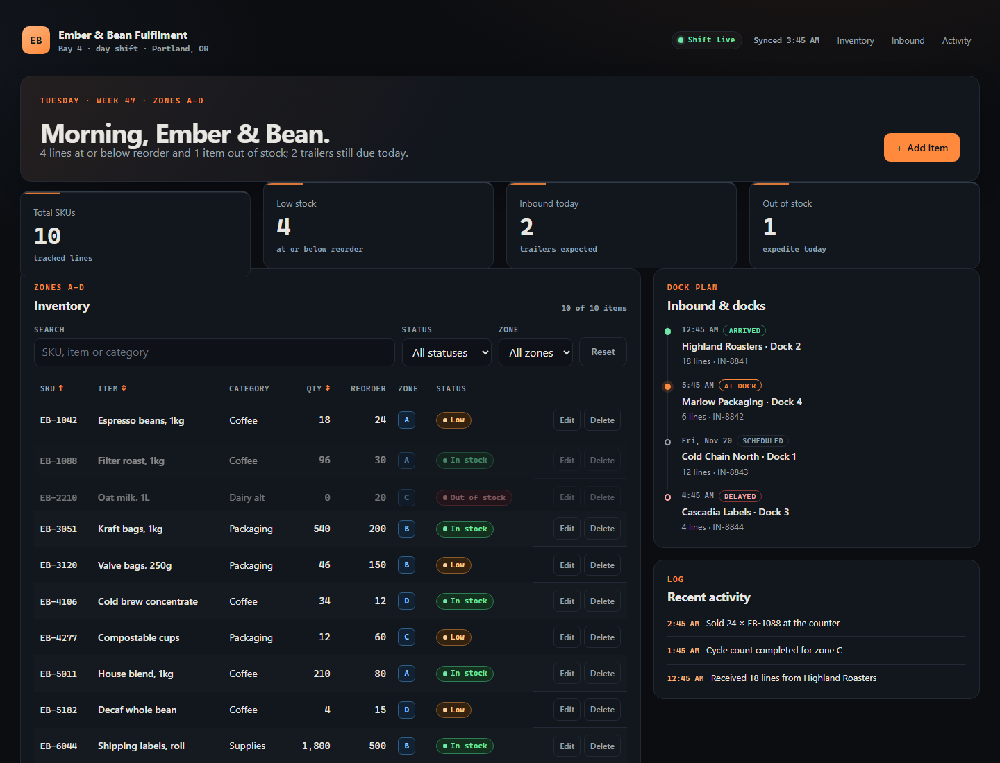
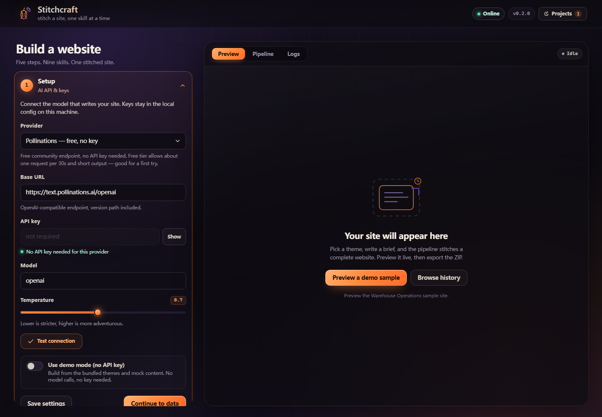
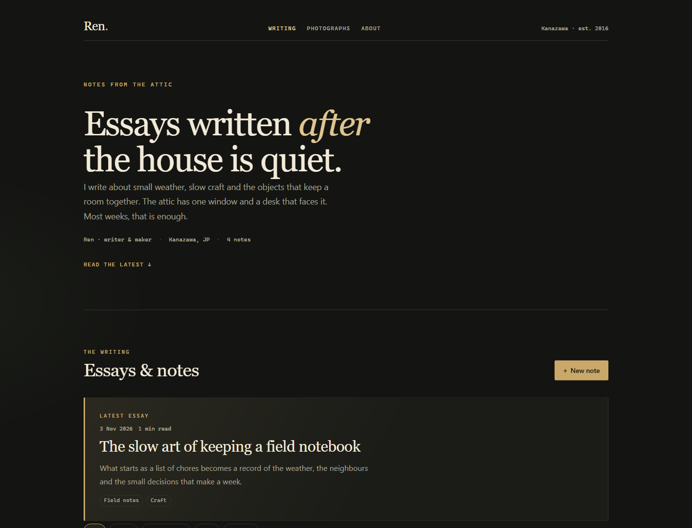
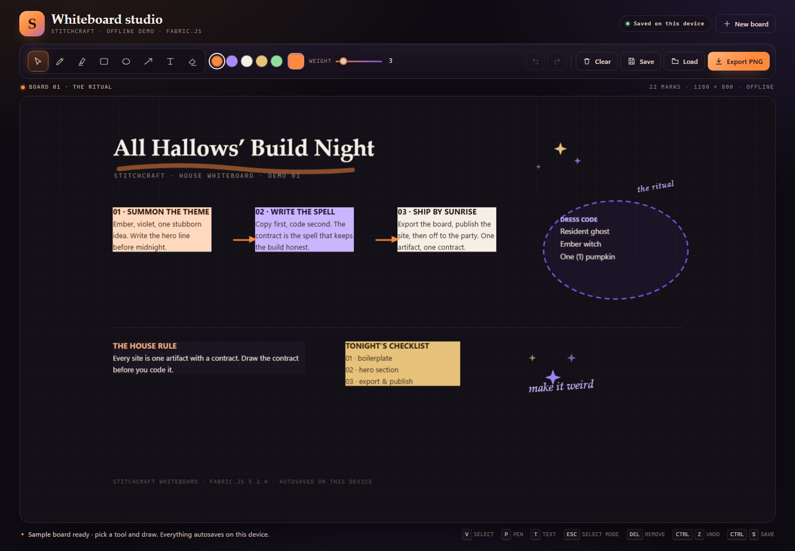

Ember & Bean Fulfilment
KPI tiles, a filterable inventory, inbound dock shipments and an activity log — the data-heavy side of the skeleton.
Kiroween 2026 Skeleton Crew
A local-first AI website generator that stitches nine specialised skills into one complete site — then lets you take it apart at every seam. Bring your own model or use a built-in free one. Kiro steering, specs and hooks keep the stitch honest.

01Skeleton Crew
One block vocabulary, one data layer, one export path. The warehouse dashboard and the personal notebook are different applications, not different products.

KPI tiles, a filterable inventory, inbound dock shipments and an activity log — the data-heavy side of the skeleton.

Tagged notes, search, a photo wall and an about page — the same plumbing, softened into an editorial personal site.
Both demos are static exports. Same skeleton, same contracts, same offline-first data layer. See the theme packages
02The stitch
Each stage has one job, one written procedure and one output. You can inspect where a decision was made instead of replaying a long chat.
Seal the ask: audience, goals, constraints and the questions still open.
Turn the brief into a page graph, navigation and content inventory.
Set palette, type, spacing and component rules as reusable tokens.
Local browser storage or a REST table you own — public config only, never secrets.
Assemble theme blocks into a page that reads like one deliberate site.
Build the tables, notes, modals, cards and empty states the theme declares.
Add purposeful GSAP movement, with a reduced-motion path for every animation.
Check labels, focus order, contrast, keyboard paths and honest landmarks.
Run the release check, then export static HTML, CSS and JS that works offline.
The original nine-module stitch calls for a contract-checked hand-off at every stage. That constraint is what stops a polished first page from turning into an inconsistent website.
03Bundled skills
Stitchcraft vendors three upstream skill packs so generation works offline. Every pack is unmodified, pinned to a commit, licensed and attributed in the repository.
Google Chrome
Browser-native patterns for modern web UI: performance, accessibility, forms and the small platform choices that are easy to miss in a generated page.
Visit upstreamGreenSock
The official GreenSock agent skills for animation that serves the interface — timelines, easing, cleanup and a reduced-motion plan that ships with the code.
Visit upstreamiart-ai
A second, independent animation pack: entrance, scroll and interaction recipes that make the motion vocabulary broader without making every page busy.
Visit upstreamVendored with their license files. Read the full attribution and trademark notes. The GSAP browser build is used under the GSAP standard license.
04Aggregated tools
Six MIT-licensed browser libraries are vendored under
vendor/ so a generated site can ship a chart, a
carousel, a drag-and-drop list or a whiteboard without ever
contacting a CDN. Versions are pinned, and the license and upstream
record travel with every folder.
Fabric.js · v5.2.4
Interactive canvas: freehand drawing, shapes, text and object manipulation for whiteboards and annotation tools.
Visit upstreamChart.js · v4.4.7
Bar, line, radar and doughnut charts for KPI panels, reports and data dashboards.
Visit upstreamSortableJS · v1.15.6
Touch-friendly drag-and-drop reordering for lists, table rows and kanban boards.
Visit upstreamRough.js · v4.6.6
Hand-drawn, sketch-style shapes and lines on canvas and SVG for a looser editorial look.
Visit upstreamSwiper · v11.2.6
Touch carousels, sliders and gallery layouts with keyboard and screen-reader paths.
Visit upstreamGridStack · v10.3.1
Draggable, resizable dashboard grids for analytics boards and configurable workspaces.
Visit upstream
A working Fabric.js whiteboard ships with the showcase: draw with the pen and highlighter, add shapes and text, undo, leave autosave to keep the board, and export a PNG. It loads the same vendored fabric.min.js a generated site would use, so this demo is also the proof that the offline path works.
Unmodified dist files, pinned versions, license and copyright preserved.
Every vendor/<id>/ folder carries LICENSE,
UPSTREAM.md and README.md; generated sites copy
only the libraries they reference and never load a CDN. Read the full
third-party notices.
Other names are property of their respective owners.
05Kiro integration
Kiro is the reference agent shell, not a runtime dependency. Steering loads the rules, specs describe the system before code, and hooks tell the agent which check to run after an edit.
Product, tech and structure rules stay in context on every task. “One module, one job” is a standing order, not a suggestion.
.kiro/steering/
Two specs in requirements → design → tasks form. A ticked task names the files it touches and the requirement it delivers.
.kiro/specs/
Seven edit-time and release checks for seams, module anatomy, specs, skills, themes and the desktop server — all backed by the same validator.
.kiro/hooks/
find .kiro -type f | wc -l
16
find .kiro/hooks -name '*.kiro.hook' | wc -l
7
python -m stitchcraft validate --strict
stitch validate: ok — 0 error(s), 0 warning(s)
python -m stitchcraft plan --mermaid-only
flowchart LR
brief --> plan --> design --> copy --> build
build --> seo --> qa
build --> a11y --> qa
qa --> deployThe same commands run in CI. The hooks are reminders; the validator is the referee.
06Demo film
The short cut starts with the two exported applications, then records one warehouse build from a typed brief through all nine stages to the preview and ZIP export.
The public YouTube link is added here before the Kiroween 2026 Devpost submission.
YouTube · link pending07Quickstart
Four commands from a clean clone to the local studio. Python 3.11+, no account, no cloud sync. Microsoft Edge gives the chrome-less app window; a normal browser tab is the fallback.
git clone https://github.com/RenXiaoxiang/Stitchcraft.git
cd Stitchcraft
pip install -e .
python -m stitchcraft app08The category
A warehouse operations console and a personal notebook are the same skeleton with different clothes. Frankenstein is the secondary flavour: Kiro, Chrome guidance, GSAP skills and the user's own AI, stitched into one working machine.
Read the submission write-up